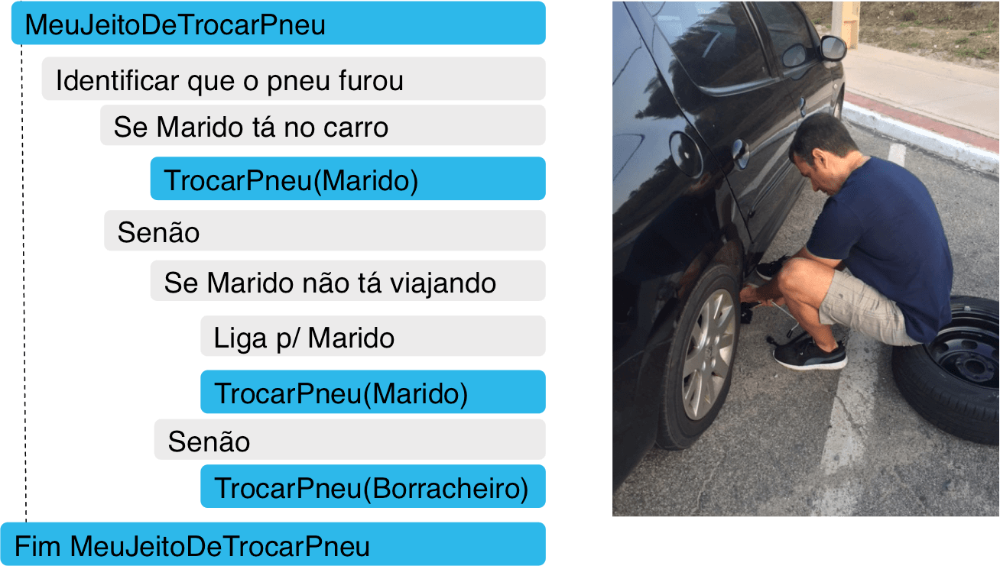

AED
- Aula 01 -


Conteúdo
ALGORITMOS
- Ordenado
- Finito
- Não ambíguo
ALGORITMOS
ALGORITMOS
ALGORITMOS
Ambiguidade: Qual tipo de macaco?
ALGORITMOS
ALGORITMOS

ALGORITMOS
ALGORITMOS
Três fases fundamentais
Exemplo 1
Escreva um algoritmo que leia um valor em real e mostre o valor em dólar.
Exemplo 2
Escreva um algoritmo que calcule a área de um quadrado.
Variáveis
É um local nomeado na memória onde um programador pode armazenar dados.
+ e, posteriormente, recuperar dados usando a variável pelo nome.
+ O valor varia ao longo do tempo (programa), mas só pode armazenar um valor a cada instante
+ Possui nome e tipo (Numérica, Textual ou Boleana)
Variáveis
Regras de nomes
+ Deve começar com uma letra ou _
+ Pode ser constituído de letras, números e sublinha (underscore).
+ Distingue maiúsculo de minúsculo.

Tipos de Variáveis
Variáveis Numéricas
Armazenam números. Podem ainda classificadas como inteiras, reais (float) ou complexas:
```python
a = 2019
print(type(a))
```
```python
a = 1.5
print(type(a))
```
```python
a = 4+3j
print(type(a))
```
Tipos de Variáveis
Variáveis Textuais (String)
Específicas para dados que contenham letras, números e espaços:
```python
a = 'Este é 1 exemplo de string'
print(type(a))
```
```python
a = "Também pode ser usado aspas duplas"
print(type(a))
```
Tipos de Variáveis
Variáveis Booleanas
Armazenam somentes dados lógicos:
Verdadeiro ou Falso
```python
a = True
print(type(a))
```
```python
a = False
print(type(a))
```
### Conceitos fundamentais: Comando de Atribuição
### Comando de Atribuição
O comando de atribuição cria novas variáveis e dá valores a elas:
```python
>>> mensagem = "E aí, Tudo bem?"
>>> n = 17
>>> pi = 3.14159
```
### Conceitos fundamentais: Comando de Entrada
### Comando de Entrada
## INPUT
Para permitir flexibilidade, podemos querer receber a entrada do usuário. Em Python, temos a função input () para permitir isso.
```python
# coding=utf-8
nome = input('Digite o seu nome: \t')
```
### Conceitos fundamentais: Comando de Saída
### Comando de Saída
## PRINT
Usamos a função print () para enviar dados para o dispositivo de saída padrão (tela).
```python
# coding=utf-8
disc = 'Algoritmos e Estrutura de Dados'
semestre = '2019.2'
print('Bem vindos à disciplina {} - {}'.format(disc, semestre))
```
### Formatando a saída c/ print()
Separar por virgula
```python
x, y, z = 10, 20, 30
print('altura=', x, 'largura=', y, 'profundidade=', z)
```
Marcadores
```python
print('Hoje é %d de %s de %d.' % (27, 'agosto', 2019) )
print('Hoje é %5d de %s de %d.' % (27,'agosto', 2019) )
```
### Formatando a saída c/ print()
Usando Parametros
```python
# coding=utf-8
disc = 'Algoritmos e Estrutura de Dados'
semestre = ‘2019.2'
print('Bem vindos à disciplina {} - {}'.format(disc, semestre))
```
Usando Parametros nomeados
```python
# coding=utf-8
print('Oi, {nome} {sobrenome} '.format(nome = 'John’, sobrenome = 'Oliveira'))
```
### Condicional Encadeada
```python
if(media>=7):
print('aprovado')
print('Só alegria!')
elif(media>=4):
print('Prova final')
print('Vou estudar mais')
else:
print('Reprovado')
print('Vou estudar MUITO mais')
```
Estruturas de Repetição:
### Comando FOR
- O break interrompe completamente o laço.
- O continue passa para a próxima iteração.
- O else é executado ao final do laço, a não ser que o laço tenha sido interrompido por break.
### Exercício
- Escreva um programa que some todos os números entre 0 e 99.
### Exercício
- Escreva um programa que mostre todos os multiplos de 5 entre 0 e 50.
### Exercício
- Escreva um programa que mostre os dias da semana.
### Repetições Aninhadas
### Repetições Aninhadas
- É possível utilizar repetições dentro de outras repetições
> Exemplo: Tabela de multiplicação de 0 a 10 usando while.
Estruturas Condicionais
Utilizadas para desvio do fluxo do programa
- Condicional Simples (if)
- Condicional Composta(if - else)
- Condicional encadeada
- Condicional aninhada (if-elif-else)
- Exercícios
Estruturas Condicionais
Operadores Relacionais
Operadores Booleanos
```python
# coding=utf-8
idade = float(input('Digite a sua idade'))
maior_de_idade = idade >= 18
if not maior_de_idade:
print('Acesso proibido')
else:
print('Acesso liberado')
```
Condicional Simples
Se um determinado teste for verdadeiro, uma ação será executada.
Sintaxe
```python
if (teste):
bloco_de_comandos
```
```python
# coding=utf-8
n1=float(input('Nota 1:'))
n2=float(input('Nota 2:'))
n3=float(input('Nota 3:'))
media=(n1+n2+n3)/3
if(media>=7): print('aprovado')
```
Condicional Composta
Se um determinado teste for verdadeiro, uma ação será executada. Caso contrário, outra ação será executada.
Sintaxe
```python
if (teste):
bloco_de_comandos
else:
bloco_de_comandos
```
```python
...
media=(n1+n2+n3)/3
if(media>=7):
print('aprovado')
else:
print('reprovado)
```
Estruturas de Repetição
Em muitos algoritmos, faz-se necessário executar uma sequência de comandos repetidamente, em um laço (loop)
Python fornece os seguintes comandos de repetição:
while e for
Estruturas de Repetição: WHILE
while
Exemplo
```python
x=1
while x<=3:
print('x =', x)
x = x + 1
```
Saída
```bash
x = 1
x = 2
x = 3
```
Comando while
O exemplo a seguir calcula a soma dos números de 1 a 100.
Observe o uso das variáveis i e n para controlar o número de repetições do loop
Exemplo
```python
n = 100
soma = 0
i = 1
while (i <= n):
soma = soma + i
i += 1
print("Soma de 1 ate" , n, ":" , soma)
```
Saída
```bash
Soma de 1 até 100: 5050
```
Comando while
Exemplo
```python
x = 0
while (x < 5):
print(x)
x += 1
```
Saída
```bash
0
1
2
3
4
```
Exemplo
```python
while 1:
print(“Loop infinito”)
```
Saída
```bash
Loop infinito
Loop infinito
Loop infinito
Loop infinito
...
```
while com break
Exemplo
```python
x=1
while x<=3:
print('x =', x)
break
x = x + 1
```
Saída
```bash
x = 1
```
while com break
Às vezes, deseja-se sair do loop imediatamente, quebrando a iteração atual. Para tanto, use o comando break.
Exemplo
```python
x=1
while x<=10:
if (i==5):
break
print('x =', x)
x = x + 1
print(‘o valor de x é', x)
```
Saída
```bash
1
2
3
4
o valor de x é 5
```
Exercício
Escreva um programa que escolha aleatoriamente um numero entre 1 e 10, ao qual o usuário deve tentar adivinhar. O jogo acaba quando o usuário acerta ou quando ele desiste (digitando 0).
while com continue
Exemplo
```python
x=1
while x<=3:
print('x =', x)
continue
x = x + 1
```
Saída
```bash
x = 1
x = 1
x = 1
x = 1
....
```
while com continue
O comando continue promove a interrupção da iteração atual do loop, passando para a seguinte.
Exemplo
```python
i = 0
while (i <= 5):
i += 1
if (i==3):
continue
print(x)
```
Saída
```bash
1
2
4
5
```
Quando usar o comando WHILE?
O while é adequado quando não há como determinar quantas iterações vão ocorrer.
Por exemplo: Escreva um algoritmo que leia o código do item pedido, a quantidade e calcule o valor a ser pago por aquele lanche. O algoritmo só finaliza se o código informado por -999.
Exercício
Escreva um programa que calcule e mostre o seno dos ângulos entre 0 e 360 (de 10 em 10).dica: Use a função sin do pacote math
Estruturas de Repetição:
FOR
FOR
O loop for de Python é baseado em iteradores, ou seja, ele percorre uma sequência de itens e realiza as ações apropriadas sobre cada um deles
Os itens podem ser elementos de listas, tuplas, strings, chaves de dicionários e outros ”iterables”
FOR
Exemplo
```python
for item in ['1o','2o', '3o']:
print(item)
```
O for é adequado quando pode-se determinar quantas iterações vão ocorrer ou há uma sequência a seguir.
Repetição Aninhada
```python
i = 0
while i<= 10:
j = 0
print('===== TABUADA DE ===== '.format(i))
while j<=10:
print('{}x{}={}'.format(i,j,i*j))
j=j+1
i=i+1
```
Repetição Aninhada
Exercícios
01 - Desenvolver um algoritmo que leia a altura de 15 pessoas. Este programa deverá calcular e mostrar :
a) A menor altura do grupo;
b) A maior altura do grupo;
02 - Desenvolver um algoritmo que leia um número não determinado de valores e calcule e escreva a média aritmética dos valores lidos, a quantidade de valores positivos, a quantidade de valores negativos e o percentual de valores negativos e positivos
03 - Escrever um algoritmo que leia uma quantidade desconhecida de números e conte quantos deles estão nos seguintes intervalos: [0-25], [26-50], [51-75] e [76-100]. A entrada de dados deve terminar quando for lido um número negativo
04 - Faça um algoritmo estruturado que leia uma quantidade não determinada de números positivos. Calcule a quantidade de números pares e ímpares, a média de valores pares e a média geral dos números lidos. O número que encerrará a leitura será zero
05 - Escrever um algoritmo que gera e escreve os números ímpares entre 100 e 200.
06 - Escreva um algoritmo que leia um valor inicial A e uma razão R e imprima uma seqüência em P.A. contendo 10 valores.
07 - Escreva um algoritmo que leia um valor inicial A e uma razão R e imprima uma seqüência em P.G. contendo 10 valores.
08 - Escreva um algoritmo que leia um valor inicial A e imprima a seqüência de valores do cálculo de A! e o seu resultado. Ex: 5! = 5 X 4 X 3 X 2 X 1 = 120
09 - O restaurante a quilo Bem-Bom cobra R$52,90 por cada quilo de refeição. Escreva um algoritmo que leia o peso do prato montado pelo cliente (em quilos) e imprima o valor a pagar. Assuma que a balança já desconte o peso do prato.